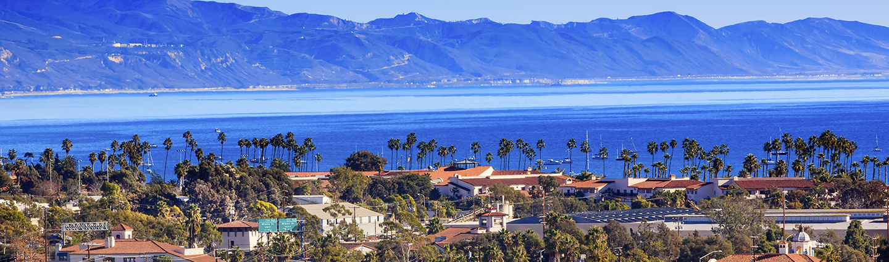

I was born in a suburb of Santa Barbara, CA called Goleta in 1986. It is my opinion that there is no more hospitable climate for humans than the paradise of California's coastline. Any day above 80° F was consider hot, and any day below 70° F was considered cold. I am grateful to my parents for the thought and consideration they put into their family planning.

Unfortunately those plans were uprooted when my father was diagnosed with kidney cancer in 1991. After a long battle with the disease, he passed away in February 1993. I was six years old at the time. Needless to say, this affected the rest of my life in a profound way. However, life does go on and the remainder of my childhood was spent doing well in school, bowling, and being sub-par at other sports.